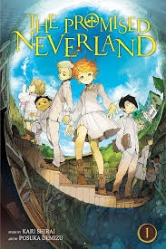

Promised neverland
Genre: Mystery, Suspense, Psychological, Survival
Director: Kaiu Shirai
Aired in Japan
Release Year: 2016
Plot Summary: When three gifted kids at an isolated idyllic orphanage discover the secret and sinister purpose they were raised for, they look for a way to escape from their evil caretaker and lead the other children in a risky escape plan.
Reasoning: Series which doesn't undervalue childrens mind state and shows how adaptive and outsmarting their growing brains actually are.